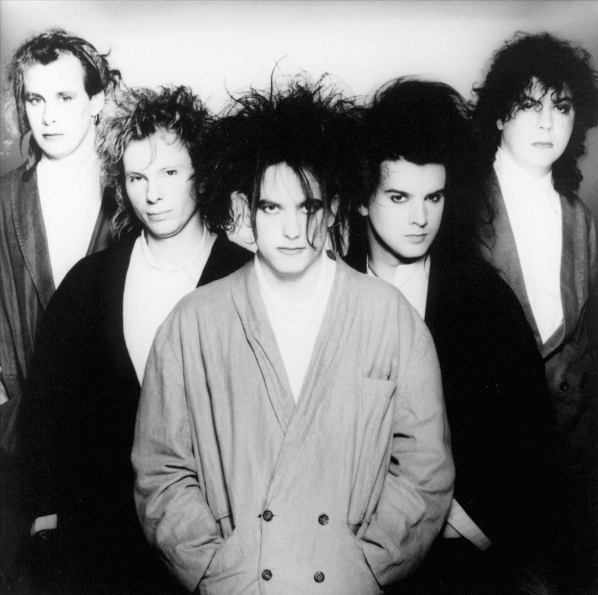

Out of all bands that emerged in the immediate aftermath of punk rock in the late 70s few were as enduring and popular as The Cure. Led through numerous incarnations by guitarist/vocalist Robert Smith, the band became well-know fpr its slow gloomy dirges and smith´s ghoulish appearance, a public image that often hid the diversity of the Cure´s music. At the outset, the cure played jagged, edgy pop songs befpre slowly evolving into a more tectured outfit.
